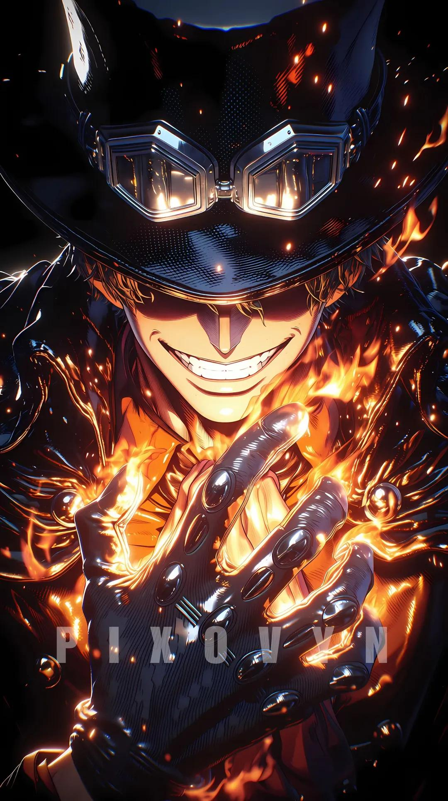
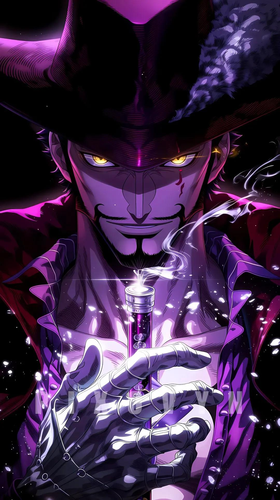

Sabo - Ace - Luffy are brothers from the moment they shared a cup of sake. Grew up together and raised by Monkey D. Garp, the marine's Legendary Hero (capturing Roger).

He should have something in common or involved with the Celestial Dragons from the Holy Land in Marijoa (Imu's eyes shape and color).